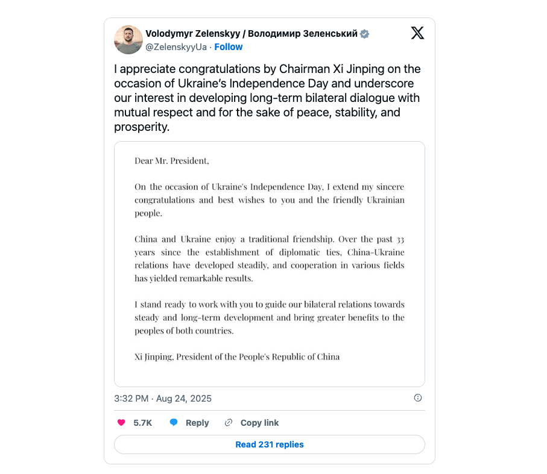

世界苦茶08月28日新闻 | 30条 | 美国对印度的惩罚关税生效

美国对印度的惩罚关税生效 | 习近平首次致贺乌克兰独立日 | 美国公共卫生服务部解雇疾控主人乱局 | 星舰首次成功部署卫星
每日三條新聞解析
苦茶数据
美元兑人民币：7.14（昨日7.15，前日7.16）
美元兑日元：147.14（昨日147.73，前日147.69）
上证指数：3792（昨日3862，前日3868）
标普500指数：6481（昨日6465，前日6439）
比特币：112765（昨日111399，前日110462）
布伦特原油：67.43（昨日67.25，前日68.33）
中国新闻
• 上海推进城中村改造 ：上海市星期三发布关于加快推进上海城中村改造工作的实施意见，提出加快推进城中村改造工作，将群众需求迫切、城市安全和社会治理隐患多的城中村优先纳入改造范围。上海市人民政府网站发布关于加快推进本市城中村改造工作的实施意见，提出改造范围主要是位于中心城区周边、老城镇地区、城乡结合部，以集体建设用地为主，现状为村民宅基地和其他用地相互交织，被城镇建成区包围或基本包围的自然村。意见称，要将群众需求迫切、城市安全和社会治理隐患多的城中村优先纳入改造范围，通过项目整体改造、实施规划拔点、整治提升等方式，多措并举对城中村进行拆除新建、拆整结合或整治提升。
• 国台办批民进党打压艺人 ：针对台湾执政的民进党调查唱和大陆的台湾艺人，大陆国台办发言人朱凤莲星期三回应说，民进党严重损害台湾同胞利益福祉，欢迎台湾演艺人员前往大陆发展。根据央视新闻报道，国台办星期三举行例行新闻发布会，有记者提到，民进党日前查处唱和大陆的台湾艺人，台文化部门负责人称，依据法律沟通并了解艺人想法，陆委会已陆续通知20多名台湾艺人，若在说明期限内未回复视同放弃说明机会。朱凤莲对此回应说，一段时间以来，民进党变本加厉阻挠限制两岸交流往来，对台湾同胞来往大陆不遗余力打压阻挠，严重损害台湾同胞利益福祉。民进党查处台湾演艺人员，其实就是企图通过不断渲染所谓“统战威胁”，加大恐吓支持和参与两岸交流的岛内人士，完全不得民心。 （翻評：快進到以“解放軍有義務保護中國人”為由出兵臺灣。）
• 香港冒牌饮用水案发酵 ：香港政府办公室近来改订中国大陆品牌饮用水，却爆出造假风波，引起食水安全恐慌。提供冒牌水的供应商鑫鼎鑫商贸有限公司董事吕子聪星期三再次被拒保释申请。综合香港电台和am730报道，香港政府物流署早前终止由鑫鼎鑫商贸有限公司向港岛及部分离岛办公室供应瓶装水的合约，涉事61岁公司股东兼董事吕子聪被控一项欺诈罪，早前提堂时被拒保释。吕子聪星期三在裁判法院自行申请保释复核，再次被拒绝，须继续还押于荔枝角收押所，案件11月11日再审讯。
• 厦门推个人破产条例 ：中国个人破产制度长期缺位的情况下，福建省厦门市通过个人破产地方法规，成为继深圳之后中国第二座探索建立个人破产制度的城市。据《福建日报》报道，《厦门经济特区个人破产保护条例》星期二经厦门市16届人大常委会第31次会议三审表决通过，将于今年11月1日起正式施行。这意味着厦门成为继深圳之后，中国第二座探索建立个人破产制度的城市。根据《条例》，在厦门经济特区居住或者从事生产经营活动连续满五年的自然人，不能清偿到期债务，并且资产不足以清偿全部债务或者明显缺乏清偿能力的，可以进行重整、和解或者破产清算。
• 中国海警3104舰返港维修 ：卫星图像显示，中国海警3104舰艇正在海南三亚市附近的榆林海军基地的干船坞进行维修。这是首次证实该舰艇返回港口。此前，中国海警3104舰艇与中国海军“桂林”号在追击菲律宾船只时发生碰撞并受损。中国官方尚未就碰撞事故发表评论。
亚太印太新闻
• 谢典林参选国民党主席 ：台湾国民党党主席改选在即，彰化县议长谢典林表态参选，他称要保护卢秀燕“做好做满”台中市长，届时交棒给她，助她在2028年参选总统。谢典林星期三在脸书平台发文。对于参选原因，他忆述今年4月回复记者问题，讲到对卢秀燕参选国民党主席怎么看时，他开玩笑说找一个小咖参选，并在2026年12月24日宣布辞职，让卢秀燕在次日接任党主席，代表国民党参选2028。
• 朝中社批韩总统妄想无核化 ：朝中社星期三发表评论文章，批评韩国总统李在明访美期间提出“韩美合作推动韩半岛实现无核化”，称这是“痴心妄想”，并重申“朝鲜绝不会弃核”。评论讥讽韩国“将全部国家主权拱手交给美国”，并称李在明继续被“无核化妄想症”这一“遗传病”缠身，将对谁都不利。评论主张，朝鲜增强核武力量是应对外部敌对威胁和国际安全格局变化的必然选择，调整核政策必须以国际局势和半岛政治军事环境的根本变化为前提。朝中社对李在明在演讲中将朝鲜称为“贫穷而凶恶的邻居”表示强烈不满，指责这是对朝鲜的“严重侮辱”，并称这就是为什么朝鲜要把韩国视为敌人。
科技新闻
• 星舰首成功部署卫星 ：美国太空探索科技公司新一代重型运载火箭星舰进行第十次试飞，首次成功在太空部署卫星。这次成功证实了SpaceX首席执行官马斯克在火箭领域的“飞行-失败-修复”策略，使它成为全球领先的太空运输公司，也是最有价值的公司之一。但是，飞船要想将人类送往月球和火星等遥远的地方，还有很长的路要走，而这正是创始人马斯克所设想的最终目的地。
• 台积电两纳米技术案起诉 ：台湾高检署侦办台积电两纳米核心关键技术窃密案，查出前工程师陈力铭跳槽日本企业东京电子后，为得知 “蚀刻机台” 量产测试数据，通过时任工程师吴秉毅、戈一平窃取参数配方，昨日依违反国家安全法、营业秘密等罪起诉陈、吴、戈等人。陈力铭、吴秉毅、戈一平涉及国家核心关键技术营业秘密之境外使用罪，检方分别求处七至十四年重刑，三人在押，且均认罪，下周移审智慧财产与商业法院；廖姓工程师等三人仅涉营业秘密法告诉乃论罪，因台积电不提告，检方予以签结；至于是否有法人及自然人有相关刑责，高检署分案续查。
• OpenAI重组谈判或延至明年 ：OpenAI的重组很可能会拖延到明年，该公司正在就其与微软未来关系的关键条款进行谈判，这也使其筹集数十亿美元追加资金的计划变得更加复杂。OpenAI正与其最大支持者微软进行复杂谈判，试图重写双方现行的商业合同，该合同原定持续至2030年。一旦达成协议，OpenAI将能够完成重组计划，使投资者得以持有公司股权，并为未来的IPO铺路。但多位知情人士表示，双方在关键问题上仍存在分歧，可能会让谈判拖延至12月31日之后。根据日本软银集团投资条款，如果届时未能达成协议，软银可拒绝兑现其对该公司的100亿美元投资承诺。
• 联大设人工智能治理机制 ：联合国大会就全球人工智能治理通过一项决议，决定设立“人工智能独立国际科学小组”和“人工智能治理全球对话”机制，以促进可持续发展和弥合数码鸿沟。根据联大星期二通过的《人工智能独立国际科学小组和人工智能治理全球对话的职权范围和设立及运作方式》决议，联合国将设立一个由40名专家组成的小组，以评估人工智能的风险、机遇和影响。此外，联合国将开展全球对话，开展政策讨论并达成共识，以加强全球人工智能治理，支持可持续发展目标并弥合数码鸿沟。新华社引述代表“77国集团和中国”发言的伊拉克代表说，如果以负责任和包容的方式部署人工智能，并服务于实现可持续发展目标，人工智能将有望变革公共服务、教育、卫生和数码经济，同时加速2030年议程的实现。这些益处的实现取决于一个公平和包容的国际治理框架，以确保公平获取人工智能，防止差距扩大，并考虑人工智能的社会、经济、伦理、文化和技术影响。让发展中国家充分参与塑造人工智能治理的未来至关重要，在这一过程中必须遵循主权、公平和透明的原则。
• 新研究显示极端热浪可能会加速人体衰老： 根据周一发表的研究，极端热浪可能会加速人体衰老。科学家分析了台湾近2.5万名成年人长达15年的健康数据，发现暴露在高温天气下两年可能使个体的所谓生物衰老加速八至十二天。听起来可能不多，但是这个数字会随着时间的推移而累积，香港大学助理教授、该研究负责人郭萃表示。研究发现，特定群体更易受高温天气加速衰老的影响，经历过多次高温天气的老年人的衰老速度可能比同样经历高温天气的年轻人更快；其他因素也有影响，比如缺乏空调或户外工作者的衰老速率也会明显上升。这种衰老并非具体天数上的寿命缩短，它反映的是生理衰老标志物的可测量变化，而非日历上的时间。
财经新闻
• 墨西哥拟对华加征关税 ：墨西哥政府计划在下月公布的2026年预算提案中提高对中国的关税，以保护本国企业免受廉价进口的冲击，并满足美国总统特朗普长期以来的要求。据彭博社报道，三位知情人士称，拟议的关税上调预计将涵盖汽车、纺织品和塑料等进口商品，旨在保护国内制造商免受中国补贴产品的竞争冲击。其中一位知情人士表示，其他亚洲国家预计也将面临更高的关税。 （翻評：這下麻煩了。）
• 蜜雪冰城营收利润双增 ：中国饮料连锁巨头蜜雪冰城公布，今年上半年营收增长强劲，品牌低价饮品继续受到注重性价比的中国年轻消费者青睐。综合彭博社和第一财经报道，蜜雪冰城星期三发布上市后首份半年报，上半年收入为148.7亿元人民币，同比增长39.3%；净利润为27.18亿元，同比增长44.1%。蜜雪冰城在半年报中称，营收增长主要归因于商品和设备销售产生的收入增加，其次是加盟和相关服务产生的收入增加。
• 寒武纪超茅台成最贵股 ：专注于人工智能晶片设计的寒武纪，星期三股价超过贵州茅台，成为A股最贵股票。寒武纪经历星期二的回调后，星期三盘中一度上涨10%，达到每股1461元的人民币价格，超越茅台，登顶A股股价第一。寒武纪星期二晚间披露半年报，2025年上半年营业收入28.81亿元，同比暴增4347.82%，实现归母净利10.38亿元。 （翻評：一個半年營收不到30億，而且很有可能是股東單一購買的公司。）
• 香奈儿在华裁员20% ：法国奢侈品品牌香奈儿据报在中国加大裁员力度。聚焦时尚产业的微信公众号“唐小唐时尚观察”引述香奈儿多名门店员工及知情人士说，香奈儿在中国市场加大裁员力度，在没有任何预告和征兆的情况下，一些员工被要求直接签署解雇协议。香奈儿内部备忘录显示，中国总部年内计划将人员从462人缩减至373人，涵盖包括技术、数字以及人力资源在内的各个部门，裁员幅度高达20%。
• 高净值投资者涌入股市 ：中国高净值投资者涌入股市，推高行情。基于私募排排网提供的数据，截至8月15日当周，管理规模超过100亿元人民币的中国对冲基金的股票仓位指达到82.29%，单周加仓幅度创下近两年来最大。据中国证券投资基金业协会数据，7月新登记的对冲基金数量和规模也创下今年新高。
• 美对10国钢产品征税 ：美国对进口耐腐蚀钢产品展开调查后，对10个国家/地区做出反倾销和反补贴税的肯定性裁决。路透社报道，美国商务部星期二发布声明说，这项裁决涵盖澳大利亚、巴西、加拿大、墨西哥、荷兰、南非、台湾、土耳其、阿拉伯联合酋长国、越南的产品，总值29亿美元。美国商务部最终裁定，从这10个国家/地区进口到美国的耐腐蚀钢产品存在倾销和/或补贴。
• 中国工业利润连降三月 ：中国7月规模以上工业企业利润同比下降1.5%，连续第三个月下跌，但跌幅较上月收窄。中国国家统计局星期三发布数据，7月份，规模以上工业企业利润同比下降1.5%，降幅较6月份收窄2.8个百分点，连续两个月收窄。前七个月，全国规模以上工业企业实现利润总额40203.5亿元人民币，同比下降1.7%。1至7月，规模以上工业企业中，国有控股企业利润下降最多，同比下降7.5%，股份制企业利润下降2.8%。外商及港澳台投资企业和私营企业实现利润总额均增长1.8%。
• 美财政部长称关税收入大增 ：美国财政部长贝森特说，由于总统特朗普实施的关税政策，美国一年的关税收入可能超过5000亿美元。路透社报道，贝森特星期二在白宫内阁会议上说，他之前预测的每年3000亿美元关税收入估计过低。“7月至8月的关税收入大幅增长，我认为8月至9月的增幅会更大。因此，我认为我们可能会向超过5000亿美元，甚至接近1万亿美元的目标迈进。本届政府，你们的政府，已经显著削减预算赤字。”
• 美对印25%关税生效 ：美东时间27日0时起，美国对自印度进口商品征收的25%惩罚性关税生效。当前，印度输美商品的关税税率已增至50%。此次关税旨在执行特朗普的行政令，理由是印度“以直接或间接方式进口俄罗斯石油”。面对压力，印度政府日前已宣布多项政策，重点帮助农民和小企业主应对关税冲击。包括制定发展计划惠及小农户、畜牧养殖户和渔民，降低税率支持中小微企业成长，鼓励多元化出口以及向受关税打击的出口商进行财政援助等。美印双方已就贸易问题进行了五轮谈判，尚未达成任何协议。原定于8月25日至29日举行的新一轮印美双边贸易协定谈判已被推迟，美国贸易代表团印度之行并未成行。印度外交部长苏杰生23日称，印度与美国的贸易谈判仍在进行，双方贸易纠纷对印度经济的负面影响不会是永久性的，“最重要的是我们划定了一些红线。没有人说谈判破裂了。从这个意义上讲，谈判还在继续”。苏杰生说，印方的“首要红线”关乎本国农民和小企业主利益，“在这方面我们无法让步，对此我们非常坚定”。
• 美团拟年底取消超时罚款 ：据悉，美团骑手体验运营负责人日前在内部表示，美团将在2025年年底前全面取消超时罚款。在骑手 “进小区难” 问题上，美团在主管部门指导下合作落地 “骑手友好社区”，打通数据后骑手扫码即可快速通行，目前 150 个城市的24700余个社区完成改造，月均服务骑手超68万。自今年第二季度开始的外卖大战，对各家平台的影响已在财报中有所体现。周三，美团发布了第二季度财报。财报显示，二季度美团收入为 918.4 亿元，同比增长11.7%。经调整净利润为 14.9 亿元，同比下滑89%。受竞争影响，美团、京东今年二季度的净利润均有明显下滑。
俄乌战争
• 习近平首次向乌克兰独立日致贺电： 据彭博社8月26日报道，中国国家主席习近平在乌克兰独立日向乌克兰总统泽连斯基致公开贺电，这是习近平首次公开承认乌克兰脱离苏联独立。此外，这也是两国领导人两年多来首次已知的接触。该社还指出，习近平的贺电是在普京预定访华前几天发出的。通常报道习近平致世界各国领导人贺电的中国官方媒体并未刊登习近平致乌克兰的贺电。
• 俄军空袭乌能源设施 ：俄罗斯军队向乌克兰苏梅州、波尔塔瓦州、切尔尼戈夫州、哈尔科夫州等地区的能源和天然气输送系统基础设施发动空袭。乌克兰能源部星期三在社交媒体发文称，俄军在26日晚至27日凌晨进行攻击。凌晨1时，苏梅市的一处关键变电站遭无人机袭击，相关设施被摧毁，袭击导致苏梅市大片区域以及工业企业的电力供应中断。波尔塔瓦州的天然气输送设施遭到大规模袭击并严重受损。各地遇袭情况正在核实中，乌国家紧急情况局救援人员正在遇袭地点开展救援工作。新华社引述乌能源部称，乌能源和天然气公司技术人员正在努力恢复能源和天然气供应。
国际新闻
• 以军公布纳赛尔医院调查 ：以色列国防军星期二就加沙地带纳赛尔医院空袭事件公布初步调查结果，称以军在行动中发现哈马斯在医院区域安装军事监控设施，遂采取打击措施予以清除。哈马斯驳斥以军说法“毫无根据”。新华社报道，以军声明指出，调查发现监控设备被用于“监视以军动态并引导恐怖活动”。以军总参谋长扎米尔在声明中说，以军在行动中“击毙六名恐怖分子”。他对平民伤亡表示遗憾，并称将对空袭授权程序和战场决策过程进行进一步审查。哈马斯同日发表声明说，以色列袭击医院的解释是“试图通过编造一个虚假的理由来为罪行辩护”“仅仅是为了逃避对这场彻头彻尾的大屠杀的法律和道德责任”。
• 美国卫生与公共服务部8月27日宣布疾控中心主任苏珊·莫纳雷兹离职，但并未解释原因： 莫纳雷兹7月31日才宣誓就职，上任不足一个月。莫纳雷兹的律师27日晚发文称，莫纳雷兹既没有辞职，也未被告知其遭解雇。律师称，莫纳雷兹因为拒绝下达不科学的指令和解雇卫生专家而成为目标。疾控中心本周至少有4名高级官员辞职。辞职的疾控中心副主任德布拉·霍里对计划中的预算削减、重组和解雇对该机构造成的严重影响表示遗憾。霍里表示，疾控中心的科学永远不应受到审查和政治影响，疫苗可以挽救生命是无可争辩和公认的科学事实。她援引美国麻疹病例创历史新高表示，错误信息已夺去生命。消息人士称，莫纳雷兹被解职之前，卫生与公共服务部长小罗伯特·肯尼迪要求莫纳雷兹解职霍里等人，但遭到莫纳雷兹拒绝。两人还因疫苗政策发生冲突，包括即将宣布的一项可能将疫苗接种与自闭症联系起来的公告。 （翻評：美國現在太草台了。美國社會有嚴重的反智傳統。）
• 英国今夏或创最热纪录 ：气候变化正将以往平平无奇的年份变为破纪录的一年，今年夏季“几乎肯定”是英国有记录以来的最热夏天。英国气象局星期二公布临时统计数据显示，2018年夏季曾是自1884年有记录以来英国最热的夏季，平均气温为15.76摄氏度，而今年6月1日至8月25日英国平均气温已达16.13摄氏度。新华社引述英国气象局科学家埃米莉·卡莱尔说，2025年夏季“几乎肯定”将成为有记录以来英国最热的夏季，除非8月剩余几天的气温比平均气温低四摄氏度左右，但天气预报并未显示会有这种可能。
• 欧车企质疑燃油车禁令 ：欧洲汽车制造商指出，欧洲联盟计划实施的燃油车禁令已不再切实可行，并警告称气候法规可能会削弱该地区的汽车工业及其供应商网络。行业主要游说团体领袖致函欧洲委员会主席乌尔苏拉·冯德莱恩，敦促欧盟重新审视到2030年代中期逐步淘汰化石燃料汽车的计划，原因是中国主导电动车供应链以及美国提高贸易壁垒，对这个目标构成了新的障碍。彭博社报道，欧洲汽车制造商协会主席奥拉·卡勒纽斯和欧洲汽车供应商协会主席马蒂亚斯·津克在信中写道：“欧洲汽车行业转型计划必须超越理想主义，正视当前的产业和地缘政治现实”，卡勒纽斯是梅赛德斯—奔驰集团首席执行官，津克是汽车供应商Schaeffler的高管。
• 丹麦召见美使馆代办 ：丹麦外交部长拉斯穆森说，任何试图干涉丹麦内部事务的行为都是“不可接受的”，他已指示外交部召见美国驻丹麦使馆临时代办，要求美方就在格陵兰岛从事秘密活动作出解释。新华社引述丹麦广播公司的报道说，至少三名与美国总统特朗普及白宫高层关系密切的美国人近期多次往返美国和格陵兰岛，试图通过建立私人网络、渗透当地社会、加强信息收集等方式，推动格陵兰岛与丹麦保持距离、加强对美国的依附。拉斯穆森星期三在接受媒体采访时说，“完全了解”外国势力对丹麦与格陵兰岛的关系感兴趣，因此丹麦政府对上述行动不感到惊讶。他同时强调，任何试图干涉丹麦内部事务的行为都是“不可接受的”。
• 巴西最高法院监控博索纳罗 ：巴西联邦最高法院法官德莫赖斯星期二裁定，对巴西前总统博索纳罗实施全天候监控，要求向他的住所派遣联邦区刑事警察进行看守。新华社报道，根据巴西最高法院发布的公告，德莫赖斯认为，考虑到博索纳罗之子在境外活动频繁，博索纳罗有潜逃风险。随着审判日期临近，有必要采取措施以确保刑法的执行。德莫赖斯说，这些监控措施“绝对必要且恰当”，不会恶化博索纳罗的处境。